You have the right of way before the coupe in front of you, because you are the first to approach the intersection (§109).
Both cars have to come to an complete stop before continuing (§103).
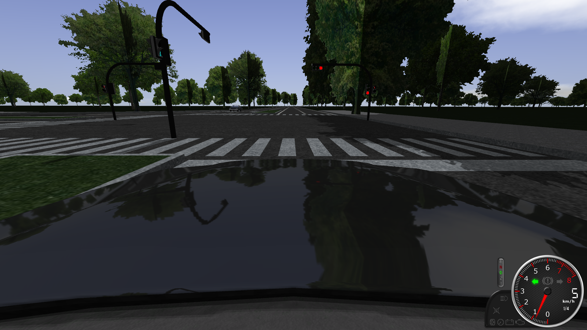
There are no "protected turns" for us. The Coupe has to yield for you (§104.1):
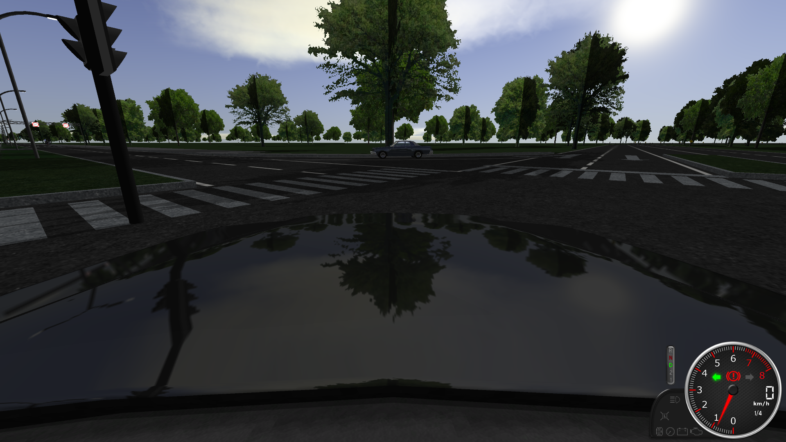
You have to yield for the coupe (§106).
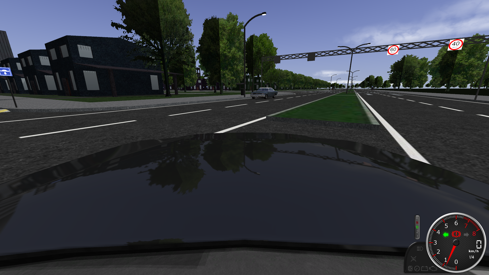
You have to yield for the bus, which has already arrived at the intersection (§109).
There is no need to come to an complete halt here.
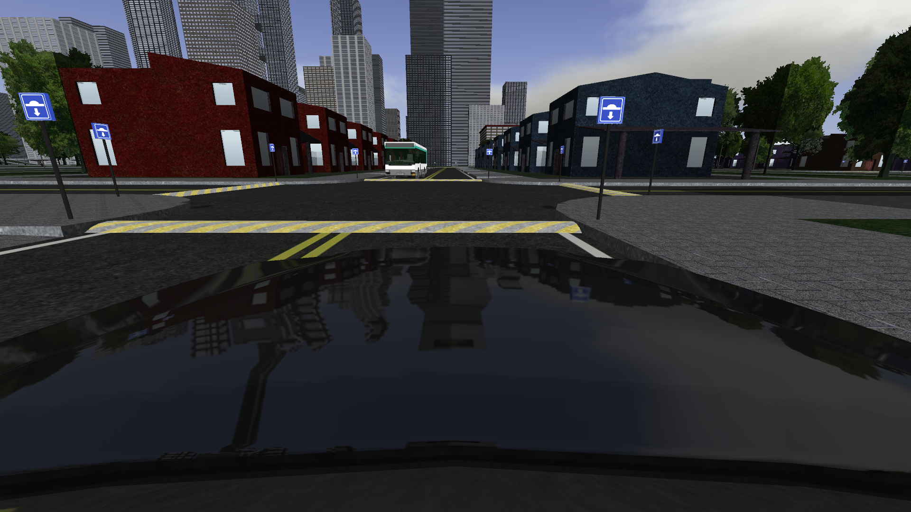
The police car has to make itself visible for others, which it does (§401.1).
You have to yield for the police car (§402).
You have to come to an complete stop at the intersection, but not the police car (§103 and §402.1).
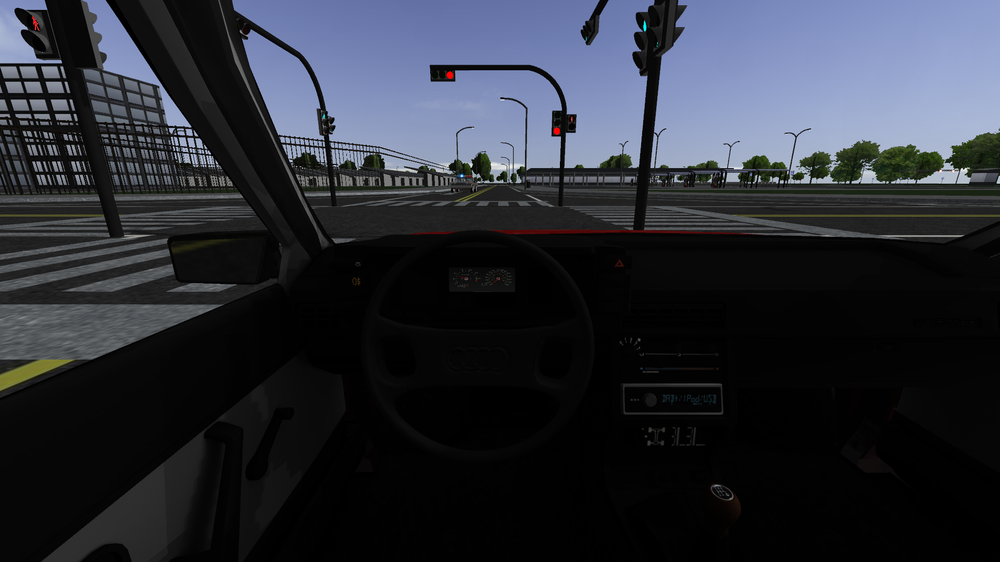
You can not park on main roads (§201).
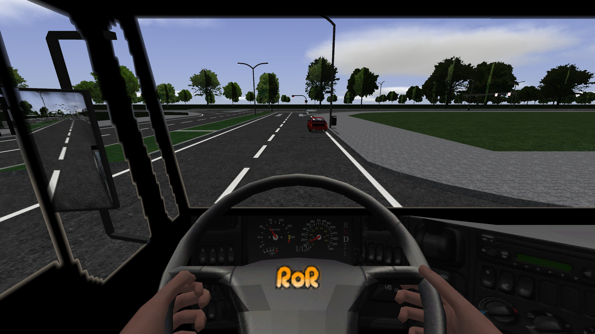
Heavy combinations are not allowed to park on sidewalks (§204).
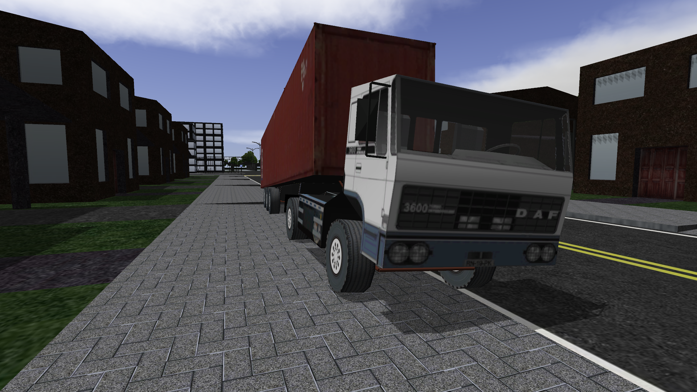
Drivers are allowed to turn over solid lines when using an intersection (§107).
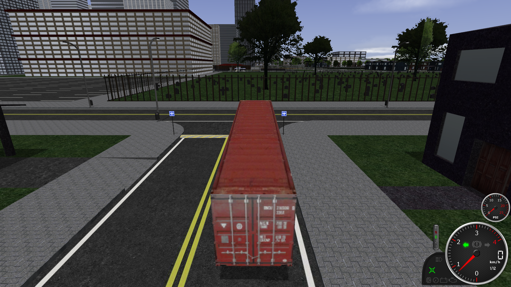
Drivers have to follow the instructions given by signs (§4).
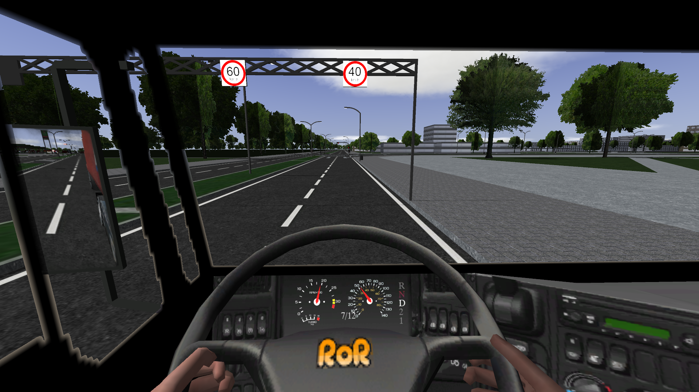
No traffic is allowed to remain in the blind-spot of heavy combinations (§604).
This is an intercity road, but please note that heavy combinations have to stay on the rightmost lane on other roads (§602).
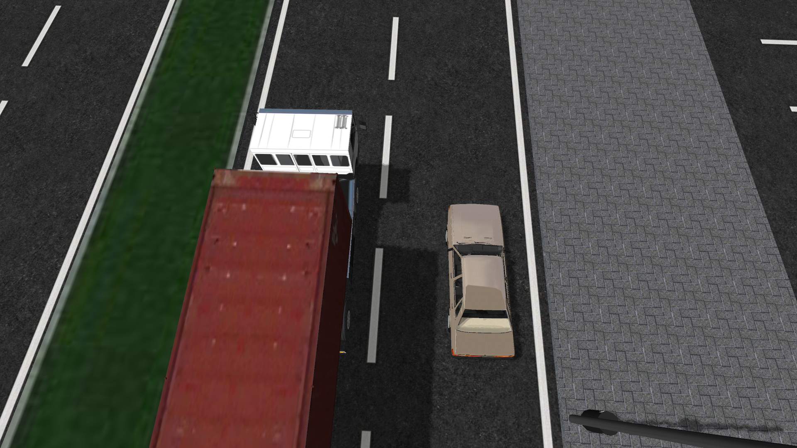
Heavy combinations have to remain on the rightmost lane on roads outside of cities and towns (§602).
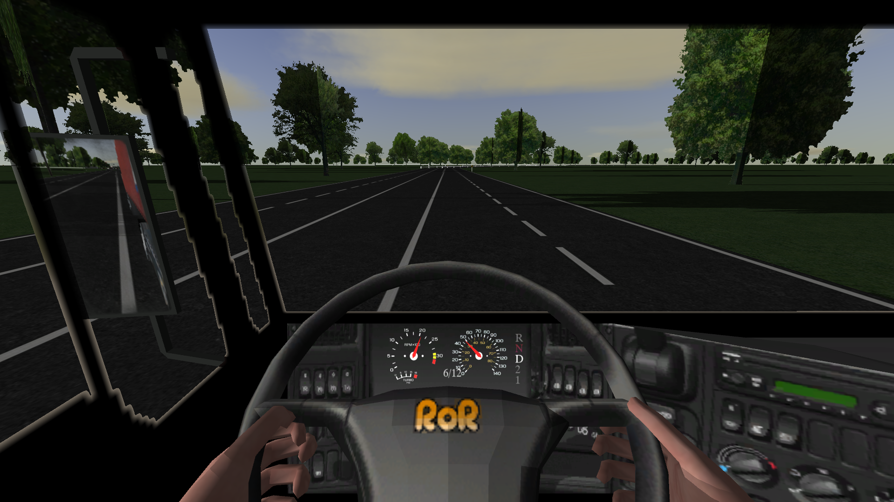
It's forbidden to park near highways (§202).
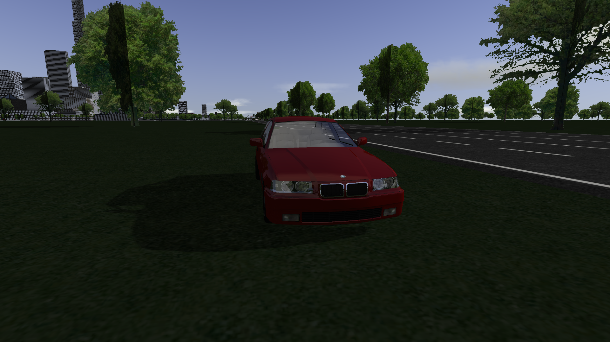
The moving combination in front has to check if its surrounding is clear, before starting to maneuver (§108).
If the combination was already moving when you arrived at this scene:
You have to yield for the moving combination and make sure to leave enough space for the other driver (§108.1).
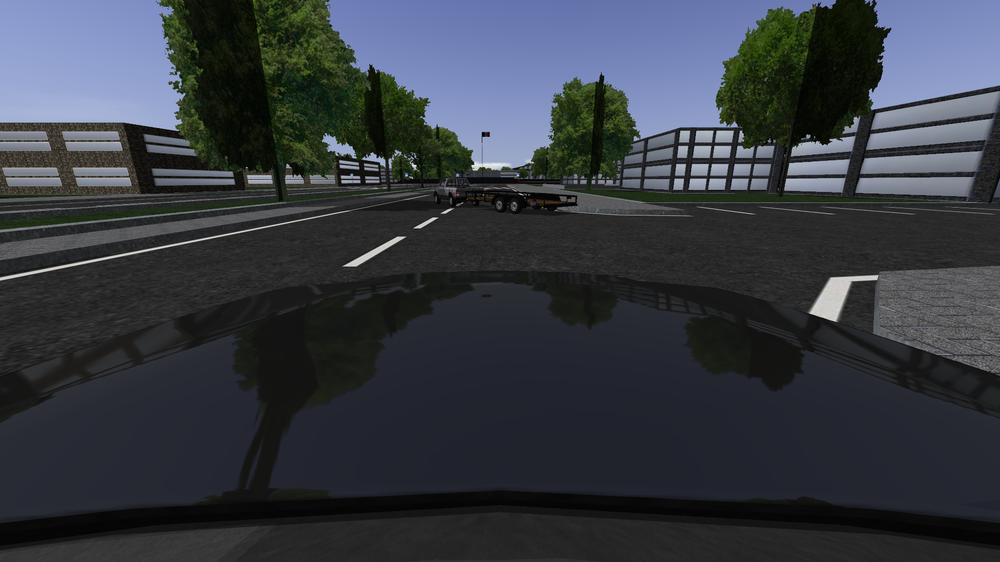